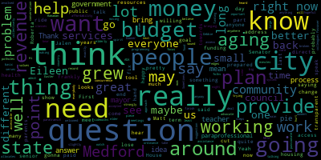
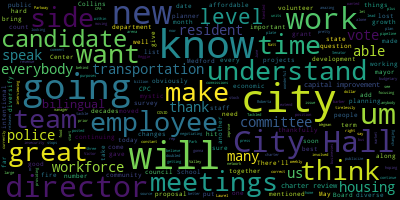
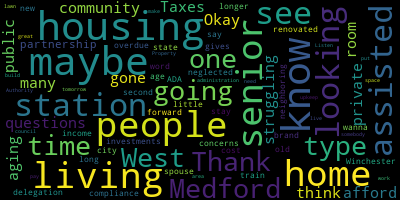
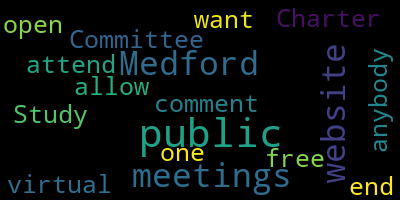
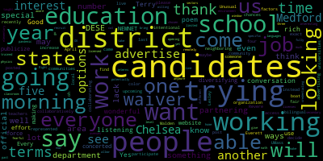
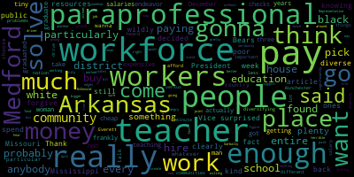

AI-generated transcript of 8th Annual Legislative Forum - 04/08/23
English | español | português | 中国人 | kreyol ayisyen | tiếng việt | ខ្មែរ | русский | عربي | 한국인
Back to all transcripts
Heatmap of speakers
[SPEAKER_14]: It was before Bill got here.
[SPEAKER_09]: Bill got here in 2016 and we had community breakfast before he came.
[SPEAKER_14]: Yes, I do remember that. Of course I do.
[SPEAKER_09]: I remember. I absolutely remember.
[SPEAKER_14]: And I'm so glad we started it off because it's good to get folks here. You know, to see what we're doing at the community center.
[Laurel Siegel]: Before then, nobody knew.
[SPEAKER_14]: Except you, because you were here coming to the senior lunches, right? You knew, but nobody else. Um, what's her name? Melody. Melody. Top of the morning. How are you? Good, how are you? Yeah, yeah, yeah. So, I, um... How old were you when you first met her? You didn't know her? No, I didn't know her. You didn't know her? No, I didn't know her. You didn't know her? No, I didn't know her. That's a good one. Is your granddaughter going to come do basketball again this year? She had a ball last year. I did, I did. That's what I look forward to that every year. She had a great time. Good, you're doing it again.
[Unidentified]: So long.
[Laurel Siegel]: You saw the report that just came out that put us down to the third and highest in the league of reds. Yeah, I put her in the top of the list. What can we do with that?
[SPEAKER_14]: I've got a bigger alternative. That's for sure. Yeah. Yeah. Good. How are you doing?
[Unidentified]: I was just going to ask one of your questions.
[SPEAKER_09]: I thought you were going to ask one of my questions.
[Cameron]: How did you get it?
[Laurel Siegel]: So, when COVID struck, she was in New York. She was in New York.
[SPEAKER_14]: It wasn't a good place, but she took it to New York. That's how she found out that New York was good for her. So, she started dancing. She's finishing up her junior.
[SPEAKER_09]: So, she went back home.
[SPEAKER_14]: And she wasn't done.
[Unidentified]: She said that she was bragging about, you know, being terrible, being 70. I know! Exactly.
[SPEAKER_14]: I was like, which way is that going?
[Unidentified]: Everything as good as gold.
[SPEAKER_14]: Representative Donato, here's a chair here for you.
[Unidentified]: If I got to get it, I'm going to do a little library. I heard the majority of the family gave us another 10.
[SPEAKER_14]: Thank you.
[SPEAKER_09]: I did some things wrong. It does.
[Unidentified]: A little massage.
[SPEAKER_09]: How are you? I'm good.
[SPEAKER_14]: I never went in that session. There was an English teacher. Julia was the mom of someone I went to school with.
[Bears]: My mom will be there in about 10 minutes. She's going anyway, but I said she's going.
[SPEAKER_09]: I'll try to show her the ATV. Ma'am. Oh, sure. I know you all are trying to make the test happen for us, but I want to also... Is it okay if I announce? That's what I wanted to ask, but should I announce? Your announcement has to go first, then I can announce the winners at the next meeting. We'll have a meeting on Monday.
[Carter]: Yeah, whatever, listen, whatever works for you. Don't worry, you know, I'm good, I'm fine.
[SPEAKER_09]: So I was debating, and I'm like, well, you know what, I should let your things go first. How are you?
[Carter]: I drove by your mural yesterday. Oh, do you see it with my big face?
[SPEAKER_01]: I tried to pull over and get a photo. I almost caused an accident. Yeah, you don't want to do that.
[SPEAKER_09]: All right, I will follow up, but what I wanted to have happen is I wanted yours. For you to be yours first, and then for me to say, this is a mentor to a lawyer, or is it okay when you send me a list, I can recognize them also at, well, you will formally recognize them, I can at least say their names at the school committee, and I don't know, I didn't wanna, I didn't want to steal any of, like.
[Carter]: I don't think so, I don't think you would. So do it in whatever way makes sense to you, really. Because I've gotten confirmation from most of them that they're going to be there. They're a couple because of school vacation week that's traveling. So what I will do is the two or three that can't make it, I'm going to actually have them come on the 25th, which is my other night when I have the adult parts. And I'll introduce them, I'll recognize them then. Oh, and then what we're going to do to kind of augment the AT is I'm going to add an open mic component for some of the kids that didn't win. So that, you know, they can at least get to, you know, speak their piece.
[SPEAKER_09]: So I'm going to sit on his side because I think the name is supposed to survive. Yeah, she's here. So that's why I'm going to sit facing, looking toward him. Because I can tell you, you know, I can put another seat up, that's not a problem. Get an appetizer. You want to make sure there's a seat for the mayor, okay. I don't know who else. I can be late today.
[Unidentified]: I can be a little late today.
[SPEAKER_14]: Yeah, but Barbara's telling me that we were doing as well, but we keep asking about her because she hasn't been dealing with it, but it's becoming quite a problem. They even ask, can we, can you figure out that parking?
[Unidentified]: No, no, no, no, no.
[SPEAKER_14]: It's perfect.
[Unidentified]: Good morning.
[Carter]: Good morning, friends and neighbors. My name is Terry E. Carter, and I am a writer and a poet. I am the Poet Laureate of Medford, Massachusetts, at least for a few more months. I also have the privilege of directing elder services here at our beloved West Medford Community Center. Welcome to our first live community legislative forum in a few years. COVID and Zoom have structured a unique long distance relationship for us for quite some time now. But our doors have been open for some time, and we're coming to you in person here at 111 Arlington Street. We're very proud to be presenting this opportunity for you to hear from a significant slice of Medford's local and state legislators and public officials. We've received a number of questions from several folks in attendance this morning. We've taken a look at that list and tried to be mindful of which inquiries impact the greatest number of constituents in this city. In the interest of time, we may not be able to address every question that we've received. However, these duly elected and appointed officials have assured us that they are open and available to continuing these conversations in the ongoing attempt to respond to each concern. Today is about the dignity of community and respect for an institution that has been here for 80 plus years. We recognize that there are strong opinions and valid differing views and political perspectives in the room. Our intent is to have folks agree to disagree without being disagreeable and without pulling us away from the core values of respect, civility, and simple decency. I would ask that you maintain an air of decorum as we go about today's business. Please allow me to introduce you to a group of legislators that has joined us for this morning's conversation. I'm going to start on my left, your right. Last but certainly not least on this end of the room, or first but certainly not least, is Sean Gabali, a state representative. Okay. Sitting next to Shawn is our superintendent of Medford Public Schools, appointed, not elected, Dr. Marice Edouard-Vincent. Sitting next to her is Isaac Zach Beers. Sitting next to Zach is the vice chair of the school committee, Jenny Graham. The school committee member, Melanie McLaughlin. The Mayor of Medford, Mayor Breanna Lungo-Koehn. Okay, and then to my right, beginning, is Paul Russo, the Secretary of the School Committee. Rick Caraviello of the City Council. And then Nicole Morel, who's the President of the City Council. City Councilor Justin Tseng. School committee person. Oh, I'm sorry. City Council. Oh, excuse me, not on my list. All right, excuse me. City Councilor Kate Collins. Kate Collins, excuse me. Excuse me for that faux pas. State Representative Paul Donato. And Senator Pat Jalen. So, as has mostly been my custom in getting conversations about neighborhoods started, I'd like to first offer a bit of poetry. April is usually the time of year in Medford when hearts and minds turn toward the blessings of spring. and it's also National Poetry Month. So as we gather together in this community space, indulge your poet laureate as I read, Let Medford Be a Blessing. You didn't come for the civics lesson or ask this poet to teach the session. And yet, the Bard is honor-bound to spread this gospel all around. To all who hear these words today, I'm offering this winning play. Beyond mere pomp and window dressing, I say, let Medford be a blessing. Politics as a context sport shouldn't be the last report. Though we may scuffle like cats and dogs, the wheel must spin with many cogs. Forgiveness is a fruit of the spirit. We must be able to grin and bear it. This is the stuff of neighborhood. We come together for common good. Strident voices will raise alarm, decrying the town's historic charm. Let not dissension be the farm where anger sows the seeds of harm. In new opinion, in fresh insight, we gain new vision to make things right. Let's make a list and check it twice. Respect for all will blend the spice. Respect for the old as well as the new. Respect for the red, the white, and the blue. Respect for the tried, the tested, the true. Respect for the path of your neighbor's shoe. A divide and conquer mentality can never lead to community, can never sponsor equality, can never rejoice in diversity, can never host creativity, can never buy universality, can never delight in veracity, is never a righteous reality. Let's meet where streams of hope converge and move beyond the spiteful urge. That's not the road where we should merge. It only leads the vein to purge. It only fuels pandemic surge. Let's be that bright and shining town where good folks gather from all around, who don't build fences to keep folks out, who don't fill children with constant doubt. Despite the season of COVID we're in, we haven't let viral exposure win. We've worn our masks and taken our shots. We haven't come down with scales and green spots. Within our fractured history remains a shroud of mystery, and so we seek to bear the truth beyond our own confessional booth. We stand on shoulders of our best, the ones who mastered every test, black and white and tan and brown. who push to build this wondrous town. We hold their stories close and dear. They salt and seed our atmosphere. Tales of courage and wisdom abound, which make our commons hallowed ground. We battle against the enemy that looks to bring adversity, that looks to turn our hearts away from kindred ties that rule the day. Such is the call to a city soul, the road that leads to a common goal. Such is the nature of clasping hands that move in concert as faith demands. We've overcome such pain and grief, but try to hold to our belief that standing at the edge of night is promise in God's perfect light. We honor our heroes with tempered pride. We never toss the struggling aside. We recognize that rising tides lift the ships where freedom rides. It's not parades that make us great. It's making room for the lost and the late. We build our legacy out of the past to godly acts we cling to fast. To all four winds the dross we cast, remembering to lift the last. How do we get to that promised place where all may share abundant grace? How do we break down rough-hewn walls to reach that land where challenge falls? What do our differences amplify? How can diversity multiply? The cultural soup we want to try, the blended family's strong reply. We sit and talk to make things right. We work out issues in plain sight. We build consensus day and night. We don't make war to show our might. We share a meal to ease our fears. We welcome folks with new ideas. We find the laughter that always endears. We offer shoulders to capture our tears. We smile when human contact nears. This is the strength of community, where neighbors strive for dignity, where diverse people share a bond that ignorance may frown upon. This is the goal of the fair and the just, to break down walls and build up trust. Who can dispute such fellowship? We cling now to this noble grip. We'll work to ease our fear of strangers and not advance new trials or dangers. We'll strive to make our city's crest always stand for Medford's best. Here is our hand of strength extended. We won't let friendship be upended. All of our people must be protected. No one here should feel neglected. We vote to achieve our common goals. We meet each other at the polls. We don't make rules to eliminate. We move real equity into the slate. We show respect and minimize doubt. We flow from a wide and open spout. Let leadership speak to a brave new vision that answers to all without derision. Let public officials carry the weight of promoting peace and reducing hate. At the end of the day, we're all we have to bind our wounds with Gilead's salve. And so we measure each sunrise as ample chance to strategize, as ample chance to grow more wise, as ample chance to empathize, as ample chance to change the lies as ample chance to grow our ties. Let us lift as we climb to greater heights and strive to eliminate petty fights. Let us look to the heavens as God reveals the fortune that our strife conceals. Our grasp propels extended reach. Let's always endeavor to rightly teach. Let's always practice what we preach. Let's follow our leaders into the breach. Let's see the lines before we cross, embrace the gain and cut the loss. Mine is a message of healing first, the blessing that quenches every thirst. Mine is a letter to Medford's soul, preaching for a unified goal. We've seen disease and rage provoke some ignorance as wisdom spoke. Now is the season for love and peace to lose our hearts and reason for love and peace to lose our hearts and regrets. So now you've had the civics lesson. The poet yet must ask the question, for still this bard is honor bound to show good proof that words resound. To all who hear this ode today, we clasp our hands and yes, we pray. A single hope we're all confessing. We shout, let Medford be a blessing. We shout, let Medford be a blessing. All righty. So let's see how we do. He sees rear access walkway project.
[SPEAKER_01]: Good morning, everybody. It is great to be here with all of you. I wish you and your family a wonderful start of spring. Hopefully it'll warm up soon. So Senator Jalen and I have been working on this for longer than we should have had to work on it. Rachel Tanner came to me over five years ago, as did Reggie. Where's Reggie? He was here. Reggie. About trying to get a walkway, just a simple walkway to the road. you know, because there's grass out there and in the winter it can be hazard to try to access the West Medford Community Center in the winter. So we've been working closely as a delegation with the mayor to try to get money in the budget, in ARPA, and to try to get the Department of Conservation and Recreation to finally allow us to do it. So we have secured around $350,000 over the last few years in ARPA and in the general budget to try to make this happen. And I will tell you, when we first got this request, I went to the commissioner at the time. The commissioner changes about every six months, unfortunately. But at the time, we went to the commissioner, and the commissioner said, no problem. This makes sense. We'll do it ASAP. Five years later. That it's still there. So the money has been appropriated. I was talking to Reggie upstairs and to the mayor. The state has given the money, part of the money, to the city of Medford. So it's out for bid right now. So I would assume we're going to see progress in the next two or three months. But the money's there. It's been appropriated. The schedule is there. And so we should see progress very, very soon. I will say there will be a new commissioner of DCR announced on Monday. That's the Healey administration has every right to do that, but the money is there. So they can't take the money away. It's been signed into law and the city of Medford has it. Rachel, I'm looking at you. So I promise we'll get it soon. I will also announce, because it is important, usually this breakfast happens after the House does its budget, not this year. We've had it obviously today, but we're doing the budget in two weeks and the delegation has worked hard. We're going to file the $50,000 appropriation for the West Medford Community Center. We are able to secure it every year. This year should be no different. So thanks so much, Senator.
[SPEAKER_05]: Well, just how can I add to that? I just want to say that we have had dozens of DCR commissioners in the last five years. And this commissioner, Doug Rice, cut through, came up here, looked at the situation, and said, the first thing we have to do is clear up between the lawyers. And that's been done. And for five years, we didn't even know what had to be done. I just thought, you know, put down some stuff. I thought that would be simple, but no. So anyway, I hope the new commissioner's gonna be good, but let me say that I think Doug Rice deserves a great deal of credit, not only here, but on Route 16, farther south. He's been really accessible, and I'm very grateful to him.
[Carter]: Thank you, Sean. Thank you, Senator Jalen. Okay, so. So this is an interesting question, and I'm not sure who will want to take a crack at it, but is the zoning board in Medford taking a look at how excessive condominium development is destabilizing the neighborhoods of Medford and accelerating the lack of affordable housing?
[Collins]: Hi everybody nice to see you all I know some of you I don't know all of you Hope to know all of you very soon. So I can't speak on personal experience to what the Zoning Board of Appeals is doing about Regulating and observing the Development of condos in Medford, but I can't say on the City Council side some action that we are trying to take do what is within our jurisdiction to observe and moderate and regulate the conversion of rental units into condos in Medford because I think especially in this neighborhood it goes without saying what an impact that can have to take rental units off the market and also, you know, these speculative market forces turning neighborhoods into, you know, the commodification of housing. So the city council has begun to look at a condominium conversion ordinance This is something that exists in many similar communities close to us in the region what that does or what it would do what's proposing to do is to put a set of conditions and stipulations on the conversion of certain rentals into condos in Medford and so We're in the really early stages. There's lots of time for community input zba input neighborhood input on How this should be targeted where it should be targeted But the main thrust of that is to say if you are a for-profit developer that's coming in and turning Neighborhood homes, especially rental units into condos that are going to be flipped from which a for-profit developer can derive a lot of value we need to make sure that value is getting put back into the community because of You know, it's only fair the developers are making money off of the housing stock and the wonderful neighborhoods and the amenities that we have here in Medford the community needs to be benefiting to maybe that is measures to improve stability for the tenants the residents that are getting displaced because of those conversions in Medford Maybe it's an appropriation into our very new affordable housing trust in Medford. That's something on the ordinance side, thanks to the advocates for that, recently passed. But that's something that we are looking at and we can hopefully work in tandem with the ZBA to make sure that when condo conversions do occur in Medford, that they're occurring at a pace and in a way that is very careful about the impact on the community.
[Carter]: Thank you. Thank you. Did you want to speak? Okay. Very good. Very good. Thank you. Thank you. Okay. So, another question that has arisen is about, and there's a couple of different questions, but one of the questions, and it's, it was asked specifically if Representative Garbali could speak to this. Is there an awareness amongst your folks that there's been a very serious deterioration in the service of amenities like the ride that the MBTA provides? The ride needs serious oversight and renovation according to some.
[SPEAKER_01]: Thank you for the question, Eileen. I do. I do, you know, Senator Jalen, Representative Donato are here, Representative Barber, wish she could be here, but could not make it. There is absolutely an awareness. I would say there's awareness that the whole system, quality of service, has deteriorated. Whether it's the commuter rail, the ride, our buses, our trains. The better bus pilot was a disaster. It really was from lack of feedback. The process was botched from the very beginning. It seemed like they already had their answer of what they wanted to do, and they just did it. Now, part of it wasn't a complete disaster, because the goal was to support the inner core, the city of Boston. I strongly support giving the city of Boston and the riders and a lot of our gateway communities service. I think that's critically important. But it shouldn't be done taking away service from people in Medford, Somerville, Arlington, and Cambridge. So, I think many of you know I've been working on public transportation for a long time. I strongly support the idea of reforming the system, but I just want to be very clear, it has to be in conjunction with adequate revenue. We do not fund our transportation system here in Massachusetts appropriately. The communities get assessed, right? So there's an assessment for cities and towns. They pay into it. Medford pays a considerable amount of assessment, as does Arlington, as does other communities. And then it's revenue from the sales tax. But the sales tax underperforms each year and has been doing that for the last two decades. So that is one of the reasons why the T is in terrible shape, not the only reason. We've had really bad leadership at the T for a number of years. So just because I'm saying we need more revenue doesn't excuse their performance. So I mean specifically about the ride, it has gotten really bad. And we need to do something about it. Nobody should be left for two hours waiting for the ride to pick them up when they've made a previous schedule that the ride would pick them up. That's inexcusable. I have asked that the committee post audit and oversight and the committee on transportation have a hearing to get to the bottom of this and then come up with recommendations on how we can fix it. Positive news is we have a new general manager from New York with a lot of experience. I've already talked to him early last week about some of these problems, not the ride directly, but I have sent him a letter. So my hope is, you know, the system's not gonna turn around just like that, right? It needs investment, it needs legislation. We need to hire bus drivers. That is a serious problem, is that we just can't hire bus drivers. But part of that is we don't give them a lot of benefits. So we need to increase the benefits. If you're being spit on every day doing your job, you wouldn't want to be a bus driver either. So we need to pay them what they're worth. And so that's going to be a critical part of transportation reform. But my hope is that this session, that we will be taking up a comprehensive piece of legislation to look at governance, funding of the MBTA.
[Ilene Lerner]: Right, I'm not talking about the ride, I'm talking about in general buses.
[SPEAKER_01]: So Eileen what pointed out is the ride, and it wasn't always this case, and I think it has led the deterioration of the quality of the service, is the ride contracts service out for the drivers.
[SPEAKER_03]: Let me just add to what Sean is saying. We're gratified that the Haley administration has taken and found a very, very qualified individual to be the general manager of the T. And it is just discouraging that I recall at one time if somebody, many times people would be calling up and saying my son, my father, my uncle, my cousin would like to be a bus driver and we could not accommodate those individuals. Today we're desperately looking for those who are interested in working in the MBTA. And so if you know anyone, let us know because they are desperately looking for bus drivers and people to run the trains. The other good news that I think that you should at least be aware of is that when the people of the Commonwealth of Massachusetts voted for the millionaires tax, a portion of that money that comes in is going to be for transportation. And we are encouraged, and I know that it is the speaker's priority, and the legislative priority to make sure that those dollars go into transportation and we fund the proper departments to make sure that we are getting the kind of service that we deserve.
[Carter]: Thank you. Thank you, Paul. Mom and Terry, and by name there's a person by the name of Nicole Shuler, and didn't mind having her name being given. She lives in the Hillside neighborhood and has a six-year-old daughter who attends the Missituk Elementary School. She's part of the leadership team for the local Moms Demand Action Group, which is a national grassroots organization for gun violence prevention. uh... their local group formed about a year ago and they've been working with the school city and state officials on gun violence prevention and gun safety awareness and she just wants to sincerely thank those who have supported their efforts so far and express constituents of uh... the areas and make it so that we can continue to have affordable transportation and transportation that's convenient to all of the people in the uh... in the area and uh... so when
[SPEAKER_03]: We agree that maintenance has always taken a back seat. And although we have at the legislative level for a number of years provided additional funds for general maintenance, it seems that those funds unfortunately aren't enough to take care of all of the maintenance needs that has to be done. I know that the mayor is working with the with the T, with regard to a new maintenance facility at the Wellington area, and to try to accommodate additional maintenance facilities that are going to make it so that the type of transportation that we have is not only affordable, but working in the interest of the public.
[SPEAKER_01]: And I just want to say, I agree with everything that Rep Donato has said, but I will never
[Lungo-Koehn]: And I'll just add, on the state level, I've been getting pretty involved in the transportation arena, but there is a capital improvement proposal, billion dollar capital improvement proposal, so we will, as a city, publicize that, because they're gonna take public comment. And they're going to vote on that, they say in May. I don't know if that will lead to June, but I believe May. I don't know if anybody wants to correct me. So that is obviously we're focusing on continuing to extend transportation, but also the state is hoping to improve through that capital improvement plan. And myself as mayor, I know the better bus network. We've lost a number of stops. We lost the 94, the 80, the 710. So I know our director of transportation, myself, the city council.
[Morell]: Design proposals to update them, make them more ADA compliant, easier to access. So maybe some slight moving, some changes to the sidewalk, things like that. They're coming back April 25th because we didn't have a ton of, there wasn't a ton of notice about it. We didn't have any public participation. So April 25th, if you have strong opinions about certain stops, we can make sure we get the content they gave us on the website so people can see what the proposals are. This isn't the team that's doing the Better Bus project, but they do answer the emails. So it's not a bad time, too, that we'll actually have the MBTA in the room. Again, it's not exactly the same people, but it's not a bad idea for them to take the opportunity to speak at that meeting. So April 25th, they will be back, and there's an opportunity to weigh in on some improvements, ideally.
[Caraviello]: Thank you. During the time we have our state delegation here, one of my concerns is our West Medford train station over here. It's not ADA compliance. And our neighboring city, Winchester, has had both of their stations both been renovated and they're both brand new. When are we going to see some type of investments in the West Medford station, which is long overdue and neglected?
[McLaughlin]: Thank you. I think that's a really good and important point on the ADA compliance and it's something that The city overall needs to really consider because we have lots of ADA noncompliance in our city. And particularly we're concerned about some of the schools, particularly access to the schools, curb cuts, all sorts of things that disabled parking, all sorts of things that are issues. So we do have a disability sort of ADA committee at the school level where we're talking about some of these things and really trying to get some things in motion. The more people that can coalesce around this issue, the better, because as you all know, the more voices, the more people listen, and this is a really important cause across the city. I see far too many people that are not able to access our city, and if we want equity, we really need to ensure access. Thanks.
[Carter]: Thank you very much. Okay. All right, so, and, you know, I'm sure there'd be more than a few folks who would like to weigh in on this question. How can Medford do more to prepare for the aging of its current population in the areas of housing, food security, healthcare, and economic assistance? Well, it's just a little question. Zach, please.
[Bears]: Hi, everybody. First thing I want to say is happy Easter, happy Passover, and Ramadan as well. When we have a concurrence like that, I think it shows us that maybe we believe slightly different things, but we're all moving towards the same goal. And I also just want to take a moment in that spirit to just think about all the people who want to be welcomed and accepted who maybe aren't finding that right now here in Medford or anywhere in our country. So the question of aging, it's a big deal on all of those points. One suggestion I've heard about the ride, to go back to Eileen's question, is maybe the ride shouldn't be part of the MBTA, it should be part of elder services. And not to say that it only serves elderly people, but that may be a different view at it where it's not just one small piece of a large system, but really a direct focus on that might be an approach. But when we talk about what the city can do on the question of aging, or the question of ADA access, or the question of sidewalks and potholes and housing affordability, or really anything else, you know, something I think probably everyone up here is pretty much willing to say, at least at some point, is that it really is a question of a budget and revenue and money. And if we want to provide health care access, or we want to provide more senior housing, or we want to provide better paratransit, or we want to provide food assistance, or classes for folks, or programming for seniors, We need money to do that. And we don't have the money to do that right now. So when we talk about this question of aging and the aging that we're going to see in this city and in our state over the next 10, 15, 20 years, we're not prepared for it. I'm not trying to be a Debbie Downer. Sometimes you may watch city council meetings or you may see me and I sound like a broken record because I'm just talking about the budget and money and our needs to be prepared for these things all the time. But it's very important. Because at the end of the day, that's the main thing that a city government or a state government does. It allocates funding collectively to advocate for our needs. I see your hand, Roberta. I'm going to finish and then I'll go to you. But so that to me really is the question. I think we all admit that we don't have the money that we need to provide basic services. Until we're willing to have that conversation and really think about the different tools that we need to change that We're going to be working around the edges on these questions And that doesn't really help people a lot of people are hurt by that quite frankly so something that I'm I'm really hopeful and that the City Council is working on very strongly is working on a a budget ordinance which can better assess, show the public this is exactly what our budget process is, these are the steps to be involved, work on making that process more transparent, accessible, and bringing the community in so that we can have the values like this question about how we're gonna address the aging in our community and what resources we can bring to bear to that question in our budget. That's what I'm working on with my colleagues on the city council. I think all seven of us are passionate and committed to work on that. We've been working on that with members of the mayor's administration as well. And I think if we can really get a handle around the core issue here, which is we don't have the revenue to provide these services and to address the needs of our community and the problems that we face. If we can get our hands around that problem and come together around solutions and use every tool in our toolbox to fix it, I think we'll be in a much better place. It's not a direct answer just to this question, because I think this question is really interlinked with so many of the other policy questions and work that we need to do as a city government. And now there's three questions. So Roberta, Matt, and then Eileen.
[Cameron]: I'm just going to ask, could we prepare for this by preparing an age-friendly community plan for Medford, so that when those resources, those opportunities pop up, we know exactly what we want to do, and we can grab them and be able to implement them? So like preparation is planning, and we can plan without having the money already in place to be able to implement it.
[Bears]: Yeah, and I think that's a great idea. I mean, we have a lot of plans right now that we don't have the money to fulfill. And I don't have a problem adding another plan to the list, but it comes back around to we can have a lot of plans on the shelf, but if we don't have the money to implement them. But I'm not disagreeing with your point. I think that would be a great idea. Matt. There are a lot of ideas being thrown around to answer the substance of your question. Is there a long-term plan? No Yeah, I mean there's work that we're doing I mean we passed a zoning change that we have planned development districts There are projects that are coming in or they're definitely gonna help the city and bring more revenue to the city, but it's piecemeal it's ad hoc and and I think the question is if you can build a really open and transparent process where you can involve people and put a plan to paper and Then have goals and benchmarks where you're leading towards what your needs are and meet, you know Having the revenue to meet those needs. I think that's really the the golden goose on how we can fix this Eileen I
[Ilene Lerner]: As Paul told me that money will not be available till next year. But do we have any idea how much money would be coming to the city and, you know, and how it could be used?
[Bears]: That is a I don't have the answer to that. The state lawmakers are the ones who are appropriating that funding. There's some plans out there from Governor Haley as well, but I can't speak to the details. We'll probably know in late June, early July what the first round looks at once the House and the Senate have agreed on a budget.
[Ilene Lerner]: Isn't the state also awash in money?
[Bears]: I think they are. I know Senator Jalen thinks that they are. Even if they are, and I'm going to get off the totem pole, and I want to hear from Senator Jalen, I would just say we may be in a wash in money right now. The long-term fiscal health of the state budget is in a similar situation, quite frankly, to the city, where we've actually had major revenue losses over the last 20 years. And that's why DCR has been cut by 35%, and the T's in massive trouble, and public higher education. God, I think anyone who knows anyone going to college knows what the debt burden and the tuition cost looks like there. So the state's not. You hear, oh, we have this surplus, we have this and that. But in the long run, it's in a pretty tight spot as well. Thank you. I know the mayor wanted to go.
[Lungo-Koehn]: Senator, do you want to speak?
[SPEAKER_05]: I'm chair of elder affairs. And I was going to first talk about old people. And I hope you all get a chance to get old. But. We do need, actually Monday we're having a hearing on three bills that we think because of the speaker's support are gonna strengthen both nursing home accountability and mostly accountability and making it better. Similarly for assisted living, which why don't we have any here? And third, home care. Across the board, there is a shortage of people to take care of people who need help, from the ambulance driver, to the emergency room, to the hospital, to the rehab place, to discharge to a nursing home or home care. Every single place is short of workers, and it is costing lives. I am so upset about this. The workforce And why? Because we aren't paying people enough money. And the reason is because we live in a state that thinks we're in a state of austerity. We are. We have a lot of money right now because the federal government gave us a lot of money. There was a situation last year that brought in more money from some, do I understand it? No, but from pass through entities that will not be here this year. And do you think we will ever have a recession in the future? Just asking. Because every time we have a lot of money, we cut taxes. Every time we don't have a lot of money, we cut services. So we've talked about transit. There was just a poll that said, do you prefer cutting taxes or increasing spending? I've heard people here talking about needs for transit, for housing, I'm going to talk about people needing to be paid enough to work. So people make no connection, none, between the money they pay the state and the things they want from the state. So right now we're being asked to cut another, we just added a billion dollars to the future, which people pointed out from the fair share. That took seven years and hundreds of thousands of people working really hard. We have on the table a proposal for a billion dollars in tax cuts. Most of it is good. And about, what, a quarter to a third of it goes to the wealthiest people in the state. Okay, that's what I'm worried about.
[Carter]: Thank you, Senators and Gentlemen.
[SPEAKER_05]: This state really limits what's
[Lungo-Koehn]: not only just all of us, but the employees we have at City Hall, our directors and our boards and commissions. I see some, you know, Reggie from the Park Board and Roberta from CPC, Laurel from Charter Review. We are doing some amazing work in the city and on all levels. And it's because of the team that we put together and it's all the people that volunteer. You know, when we hit, when COVID hit, we put together a team and we handled Tackled the food insecurity that was going on at the time and we continue to do so rep barber who couldn't make it today Was able to get us a large grant for our mystic market. We are looking for a new home for them There is just constant ever-changing things going on We have three 40 B projects that we are negotiating one is going to be 350 units on mystic Valley Parkway right behind Wegman's that's going to be count as those 350 will count as within our 10% affordable housing stock, 25% will be affordable housing. We are working tirelessly to, in the planning department alone, we've doubled the staff in our planning department. We now have a new CPC, CPA manager that will start soon. We have a staff planner that's new, a housing planner that is posted, and an economic development director position that we are currently interviewing for. And through Victor's work, who was our prior economic development director, we have 40 plus projects in the pipeline that, Matt, to your question, one source of revenue is a new growth. And our new growth is only moving up, thankfully, because we need it for budgetary purposes. But the city's continuing to tackle every issue we have on our plate, and that's not just because of me, that's because of the team here. as well as the team at City Hall and our wonderful volunteers. So I just wanted to let you know we do press releases weekly on all the good things we have going on, grants that we're providing to businesses, and the list goes on. So thank you.
[Carter]: Thank you. Thank you, Mayor. Yes, please.
[McLaughlin]: I also just wanted to mention the intersectionality, right, of aging and disability, right? And so you heard Senator Jalen say, maybe we'll all be lucky enough to get older someday. And with that getting older, usually comes disability. And so getting back to the ADA point, when we're talking about you know, accessibility, it is elderly, it is individuals with disabilities, it's across the city. And some things are about money and some things are about priorities, but some things are also legislated. So the Americans with Disabilities Act is a law that requires access when reasonable, when reasonable accommodation. So really thinking about how people are coalescing around this, what civic engagement folks can get involved in, whether it's the Disability Commission, whether it's reaching out to us all here, creating groups to talk about how do we move these things forward because we can sit here for two hours and talk about all of this, or we can work together to get some things done and really creating, to Matt's point, some strategies around, okay, what are our goals this year? We're not going to tackle it all at once. What are our goals this year? Can we pick two goals this year that we want to get done? Okay, who wants to work on those two goals? So certainly, one of the things I want to work on is accessibility in the city. So if there's anybody here that wants to work on that, sign me up, I'm working with you, and I think it's a really important cause. I think it's about really civic engagement, too. Thank you.
[Carter]: Please, Jenny. We haven't heard from you, so.
[Graham]: Thanks, Terry. Earlier last year, we applied for a grant through the MSBA to take a look at what needs to happen in Medford High. And when we were here last year, I talked about that. We were advised in December that we did not make the cut this year, but that things look good for next year. At about the same time, I got a refund check from the state. And I thought to myself, 10 schools could have been built with the refunds that went to taxpayers, 10 schools. So 10 communities like Medford are waiting. What happens during that time? It's going to cost us more to build that school next year than it would have this year. So if you are able, take that refund check and find a place in Medford that can benefit from the money. That's a small way to try to sort of level the playing field. But we need to stop cutting checks when we can't meet our basic services and needs. Our kids deserve a functioning high school. And we're sort of on the brink of that building not being serviceable. And we're going to go at it again with MSBA. I hope the city council will unanimously support that on Tuesday, I think, is your vote. because that support is very necessary. I hope the MSBA will come to the table so that we can get started. And if they don't, I hope that the city will say we have to start anyway. So that's an example of how this failure of government lands here in Medford. So we need to be prepared to take action. if the government continues to not be able to provide those services from the federal level, from the state level. Unfortunately, it rests on the feet of the people in front of you, so thank you for your patience. We really do need to think carefully about the impact of things like big tax refund checks, and what does that mean we didn't get? What does that mean we didn't spend? Are we okay with that? I'm not. So I hope we never cut another refund check. until we can fix the MBTA, fix housing instability, fix the chronic aging issues that Pat was talking about, and fix public education.
[SPEAKER_01]: Thank you, Jenny. And I'm not all right with it either. We need to repeal that 1980 law. No doubt about it. I just wanted to raise, because Melanie brought it up, the issue around disabilities. And I don't know if a lot of people know this in this room, but a recent law was signed a bill that I have been filing for about 10 years. We've been working on it to open the doors of public higher education for individuals with autism, Down syndrome, and other disabilities. We finally got it passed. It was the last bill Governor Baker signed into law. So Massachusetts becomes the first state in the country to open all 29 campuses for individuals with autism and Down syndrome. The first in the country. And so I just wanted to make sure everyone here knew that.
[Carter]: We're gonna try and leave some time at the end for questions, so if you can just hold your questions, let's get through these.
[Caraviello]: Only with the word old, that's all I wanna say, and then I'll do the questions. Okay. Okay. Thank you. So one of the questions I get all the time is senior housing. People are looking for senior housing in the community. We have very little. I know many people in this room own homes. that their seniors, they can't afford to stay, they can't afford to age in the home. Taxes have gone up, cost of living has gone up. Maybe they no longer have a spouse that gives them that second income. So they're all struggling. What I would like to see going forward is maybe our administration in the council looking at maybe public-private partnerships For assisted living. I think we have some space. I think the Property up at the lawn tomorrow. We'll make a great assisted living area up there Maybe we have to work with the Housing Authority. I know this I know they're looking to put but we need more housing for people that are aging in the community. Listen, I'm aging, I know this. But I know many people in this room here, they live in homes that they're struggling to pay for with their taxes and just the upkeep of the home. So I'd like to see maybe some type of private public partnership with somebody to build senior housing or assisted living.
[SPEAKER_02]: You won't expect what's coming out of my mouth, but just think of the word old. One of the hats I've worn in this city is with the Medford Family Network, and I teach nature in the parks. How can you tell the difference between Winchester and Medford? It's stumps, and it's old trees. The value that they do to clean our air is beyond what I can tell you. I just know it. It's very, very important. And before we change things, look at the old tree that's there and say, it's going to take those little, little trees to grow how many years to help our air. And the love of my life, before Dr. Walker died, said, after you've polluted the last river, try and eat your money in the bank.
[Carter]: Thank you. So, okay, just a few more questions that I wanna get through here, and hopefully there'll still be a little bit of time for a more open forum. Let's see. Is the lengthening of the mayoral term for office on the table for discussion? It seems as if the current term assures that a burdensome amount of time is spent on getting elected to the potential detriment of making and implementing city policy. Is that a Miss Mayor question?
[Lungo-Koehn]: I'm not going to give my opinion. I think I mentioned in 19 campaign that there should be term limits. So what is important is that four out of seven Councilors voted for charter review. Unfortunately, that's not enough to get through the statehouse. So thankfully, we have a number of residents, including our co-chair, who's here today. They're doing diligent work along with the Collins Center. We gave them a good budget to have the Collins Center come to at least 10 meetings to provide support. And I think everything is on the table. There'll be surveys coming out. There'll be community meetings that we hope many, many attend so that we can bring our charter that's decades and decades old. It is a page and a half. It only references he and him. It's time to bring that up to date and I thank our committee for doing that hard work. It's Many meetings every month that they're they're working through and I'm just very thankful that we have such a great committee and the council would love to like to vote over maybe we can Pursue both avenues 7-0 vote would be great. But Laura, I don't know if you want to add anything. I
[Laurel Siegel]: just wanted to add that we will be holding our first public information session on Thursday June 8th at City Hall from 630 to 8 p.m. so both yes
[Carter]: This is very interesting. Can there be a series of meetings to explain the basics of the city's existing charter and discuss in plain terms what charter review means? When can this start happening? Or if it is public currently going on, how is it being publicized?
[Lungo-Koehn]: The committee worked very hard on basic question and answer document that will be publicized very soon, along with the series of dates and times for public meetings and the survey that will come out. So, charter review is very difficult to understand, so we brought it down to grade level terms, so everybody would be able, and that's actually how I understand it best anyway, so everybody will be able to understand what that means, what changes we could possibly make, how to make those changes, although it takes Some great deal of time, but we are we're doing all we can to get resident involvement and make sure everybody understands the process Thank you very much Okay So
[Carter]: Yes.
[Leming]: The Medford Charter Study Committee meetings are open to the public, and we do allow public comment at the end of each one of our meetings. So anybody is free to attend those. They're virtual if they want to.
[Carter]: OK. And how do the citizens get to know about when those meetings are taking place?
[Leming]: It should it should be on the Medford public website website.
[Laurel Siegel]: Yes, and if Laura if you want it So, yes, we do have a page on the city's website for the Charter Study Committee Our meetings are on the first Thursday of the month currently and they are on zoom right now and also, all of our meetings are published on the city calendar and
[Carter]: Okay. Thank you. Thank you very much. Okay. Let's see. Diversifying the workforce, especially the fire department, the police department, and the school system, teachers in particular, what new initiatives are planned or currently underway?
[Edouard-Vincent]: Good morning, everyone. Yes, I've been listening. It's been such a rich conversation this morning, and thank you again, Terry, for your wonderful poem this morning. In terms of diversifying the school force, we are making a concerted effort. Every time we publicize and advertise jobs, not only do we do it on the district school website, but we also use NEMNET, which is another organization, where candidates of color, they could be from other states, also have access to jobs that are posted just to see if there's interest. And most recently we are working collaboratively with a few of our neighboring districts. Chelsea, Everett, Malden, Revere, there's going to be a upcoming job fair April 26 so we're working with five other communities and Medford will be represented at that one to see if that will increase our chances of having other candidates participate so we did do it last year with Chelsea and we did have other candidates but more bilingual candidates that came through but again once they have options and you're working with four or five other districts the candidates have to decide what districts maybe where they live. So, those are other factors. So, we are trying to be intentional about partnering and collaborating with other districts. We're all in the same exact boat. And so, when I say that everyone's looking for teachers, so it's about what is most special about your community, that someone will say, oh, I want to come to Medford instead of going to, another district. Also, we are partnering with universities and trying to work with Lesley, UMass, and some of our other local schools to say if we're advertising and looking for candidates, please advertise and post for us as well. So we are trying to find Unusual interesting ways if we're able to bring in interns that could potentially be trained with us for one year and then if there's an opening in their specific area, then they would be able to come but Right now with education and in other areas that the numbers there isn't as much interest as there was in the past And I do think the pandemic did make a lot of people fearful in terms of working in a school environment or Some people, like, I don't want to be in a classroom anymore. I would like to do something else. A lot of people have chosen work from home options. So they're working remotely in all sectors. So we are going to have our work cut out for us. And even at the state level, DESE with the department, our department of education, elementary and secondary education, they are also aware of that. trying to think about ways to be able to recruit and allow people to come into education. So we are looking at waivers for people who may have special licenses in math or physics or even languages that are being taught. that they may not yet be fully licensed, but DESE is willing to work with them and say, OK, we'll give you a waiver. But with with that waiver, you have like a one to three year window to go and get all of the official credentialing in line. And then you would be official with the state. So we are trying all different avenues, but it is something that's going to take time. And so I do want people to know that it's not for a lack of trying. It's just that there are a lack of candidates or a very limited number of candidates. So I just want everyone to know that as well. Thank you.
[McLaughlin]: Thank you, Superintendent. And I was just going to add, if folks will spread the word that, you know, we need folks here in Medford. And also, if there are folks here that are interested, there's positions for paraprofessionals, there's positions for substitutes, people that might want to just pick up a little extra work, you know, and get into our schools and see what's going on. We need you. It does take a village. So please spread the word. And also, you know, consider if you're interested, letting Dr. Edouard-Vincent know.
[Graham]: The MTA last year started a scholarship fund here in Medford. So the MTA is the Medford Teachers Association, our teachers union. They started a scholarship program for our students, for students of color here in Medford interested in pursuing education. So back to what you might want to do with those few pennies that you have. That's another really worthy cause. They're set up, they're a 501c3. they can employer match and all of that good stuff. And it's a tax deductible way to invest in students of color here in Medford who want to pursue education and hopefully come back and work for Medford Public Schools.
[McLaughlin]: That's awesome. And also, you know, the pipeline is really drying up for teachers and especially for Teachers in special education, so if you know young people who are looking for guaranteed positions when they're gonna get out of school, let them know that that's a field to really consider. Also, teacher for the visually impaired, TVI, they're almost impossible to find. So really specialist teachers too are really a great career to consider.
[Lungo-Koehn]: I'll just speak briefly on this, on the city side, um, because fire police, um, city hall was mentioned as well. Um, and I think it just piggyback on Dr. Edouard-Vincent, you have to be intentional about wanting to diversify your workforce. And that's what we are doing on the city side. Um, I think over six months span, 25% of our, um, new employees were of diverse backgrounds and we're, we've made great progress on the police side. We have far more females than ever. We have far more, employees that speak a second language. It's really important to us to the point where the chief of police, myself, and our diversity equity inclusion director. two years ago, petitioned civil service to ask that bilingual candidates be moved up on the list after veterans. That became a big hoopla, if you remember, but I wasn't afraid to do it. We need to diversify our workforce. We have some work to do on the fire side, but we've only hired once since I've been mayor, and I made sure that there was diverse candidates that moved forward. And I'd like to give the example, and I gave it last week in front of the students at Medford High School, when you talk intentional, The best candidates obviously have to get the job but we had a situation in the city for City Hall employee and it was a Medford resident who I happen to know versus a candidate from another city who was bilingual and who did we pick? Person from another community that was bilingual because we want City Hall and our entire workforce in the city and schools to represent the people that we serve.
[Carter]: Thank you, Paul.
[Ruseau]: Thank you. To come back to what Vice President Bears said about having enough resources, there was an article this week out of Arkansas or Missouri or Mississippi, forgive me for not knowing which ones it was. And this is not a place with much money. In fact, the community is particularly poor. And so they could not get anybody for teachers. And what they decided to do, and clearly they had to spend money, is that we do have a workforce in our public schools that is particularly diverse, our paraprofessionals. And what Arkansas did, which I'm still kind of surprised, because it has to be wildly expensive, they not only would take their paraprofessionals, they would pay for their entire education, And they would pay them their salaries they were getting as a paraprofessional to not actually work. And all they had to do was be a teacher for three years after they graduated. That's not a cheap endeavor. But like probably most people up here, we got checks in December. And the non-white teaching workforce is tiny. And frankly, I think if you graduate and you're a black woman or a black man in particular, you can pick and choose any district in this country you wanna work for and they're gonna pay you whatever they're paying. So our teacher pay isn't, when we talk about diversifying our workforce, it isn't Medford versus Everett and Winchester, it's Medford against the entire nation of school districts that would like to have some teachers that aren't all white. So we really have to think about that. If you get to pick where you're gonna go, are you gonna go a place where you can't afford to buy a house on a teacher salary? The pay in communities that are a 20 minute drive from here isn't really any different than Medford's, but you can buy a house for a lot less. So if we want to solve these problems, all these things that I've heard are really important and good, but like Representative Garbally said, we're just talking around the edges here. Because we're not going to diversify the workforce without a bigger workforce of people to hire. And if we want to solve that, we could solve it. I mean, if Arkansas can do it, I'm pretty sure we could do it. Not to suggest we're better than them, but seriously, we have so much money here. and somehow a place that couldn't figure out how to hire teachers, because their pay is probably terrible, found a way to create a workforce. We can do it. And every time I hear there's not enough workers, I do want to scream a bit. Would anybody in this community really be that upset if all the people that worked at every fast food joint found another job paying significantly more, doing something in education, or working for the city, or the state, or a bus driver. There are plenty of people. We are not willing to pay for it. And I think there's not enough people. It's just a cop-out. And it really makes me angry, because I can go to McDonald's right now and get something, and there's nothing wrong with that work. But if those workers were told they could get paid twice as much to come be a paraprofessional, they'd all quit. They would. There's enough workers. There's plenty of workers.
[Cameron]: I just want to add, it's also really important to make sure that we're making the first level of the ladder accessible to people who are just graduating. The first job is really hard to get. So if we can make those first jobs be accessible to people, we can feed them into the public sector jobs that we need.
[Carter]: Agreed. I also want to dovetail back to your point earlier, Roberta, in that if people can't afford to live where they work, and Paul, you were saying much of the same thing, then it's going to be difficult to get them to come to where you want them to work because they won't have a place to live. Compounding that, if public transportation is not appropriate to get them to the places because they live in another town, it's going to be difficult to solve those equations. Justin, you wanted to speak.
[Tseng]: I wanted to make sure to speak because this is an issue I'm particularly passionate about. I know I wrote a resolution that was supported by my fellow Councilors here asking our city about exploring ways to clarify the plans to train to develop that pipeline and to find new people to join our city. But I think the most important point here is what Paul talked about with the lack of resources. It's not just school districts but Governments all across the country are seeing the importance of having diverse lived experiences and how that ties into good decent public services and how we provide that to our residents and Medford we're not again like Paul said we're not competing with our neighbors. We're competing with everyone else and I have a lot of friends from diverse backgrounds who you know have have taken well-paying jobs that pay double what they would in the public sector. And that's a problem that we need to fix at all levels, from federal, state, and local levels. But that brings us back to the need to have an open and honest and transparent discussion about our budget as well. But we can also, in the meantime, talk about what we can do to address the little problems that come up and to capture some of the benefits of that lived experience with the resources that we have right now. And so I've worked really closely with the diversity director and with the mayor to look at ways that we can expand language access in City Hall and in our city services. If we can get more translators in, if we can Yes, the diversity director especially has been working really hard to do more in sign language, which is super important. And that doesn't make up for the lack of diversity. It doesn't make up for the lack of lived experience. But it's something that we can do to capture the benefits that we would from lived experience.
[Carter]: Thank you, Justin. Thank you. OK.
[SPEAKER_04]: Oh, thanks. I used to work for Boston Public, and I was a paraprofessional, OK? And at one point, I was going to come to Medford, and I asked the pay, about the pay. It was less than Boston, even though I had to commute to go to it. I worked in Austin. So I had to get up real early and drive all the way to Austin. But I really wish that Medford had paid more. And they just didn't. So I just kept my job until I retired.
[Carter]: Thank you. So you may have heard that we have
[Graham]: like 11 union contracts and they've all been out for renewal and there's been a lot of discussion about particularly the teachers contract, it's the biggest one. But one of the really important things we did this year was dramatically increase the pay of our paraprofessionals. So I won't say it It impacted everybody. All paraprofessionals received a significant increase. Many of our paraprofessionals, particularly those who work with our high-need students, saw a very significant increase. Does that mean it's perfect? No. Our paraprofessionals were making an average of like $17,000 a year prior, a year, a year, 184 days. And now their average pay is over $25,000 a year. Up to about $30,000 a year. So it was a huge investment in our paraprofessional workforce. We should have done it many years ago, so Ruth could have come to work for Medford Public Schools. But it was a lot of hard work and shared commitment by everybody from the administration to the school committee to the mayor's office. And it's a really, really important first step into stabilizing that workforce for Medford Public Schools, but it is just the first step.
[McLaughlin]: Yeah, thank you, Jenny. And even on that end, even at a $25,000, $30,000 annual salary, that's still not a living wage, right? And so that's a huge part of it. But also, it's really important to point out that if you're only given so much of the pie, and you cut a bigger piece off for somebody else, then somebody else gets a smaller piece, right? And so we have to think about that. What are our priorities? So when we're getting a million emails and phone calls and everything else and signs and everything else in the community about what we're not providing one workforce, folks need to understand that it's because we're trying to maybe Help another workforce that has been underpaid for quite some time and we want to be able to increase the rates for everybody But again, if you're only given so much you can only do so much So it's really, you know thinking about what our priorities are and our budget shows what our priorities are Yeah
[Bears]: I'll be really short since I went really long last time. Thanks for indulging me. But I think what you just said also speaks, it brings us back to that point. We need to grow the pie. It can't be paraprofessionals don't get paid because teachers do or teachers don't get paid because paraprofessionals do because then at the end of the day, either the teacher or the paraprofessional or the student or the parents and the families or the whole community who needs Everyone needs resources and when we're pitting people against each other because the pie is too small It's it's not fair and and we all lose and Medford loses and I think you know again. I'm here with you know I appreciate the mayor saying the good things, because I've been saying all the bad things. I think there's so many great things that are happening in Medford, and I'm so proud to represent Medford and to have grown up here. But I grew up with this. I grew up when we cut music and art and recreation in the Great Recession. I grew up when my parents could buy a starter house here, and I can't. And I grew up at a time when people who grew up here could stay here, and now all my friends are gone. And I know everyone has a lived story like that, and it's because the pie is too small and the city can't help people, can't help the residents live here anymore. And it's a real problem. Thanks.
[McLaughlin]: I like that. We need to make a bigger pie. Oh, sorry.
[Carter]: OK. OK, so hopefully we've all got some good baking skills, because it sounds like a lot of pies need to be baked. sooner rather than later. So it's a lot and it's an ongoing conversation and the one thing that we're thankful of here at the West Medford Community Center is that people are beginning to feel more and more comfortable about coming here and having the conversation. So there's a lot going on in Medford right now that speaks to the spirit of the community. One of the things that's taking place on April 15th is the community cleanup. And you can certainly find out more about this on the city, Medford City website, but it'll be taking place in various places all over the city, 17 different locations, so if you want to get involved, that's definitely one way to get involved. The cleaner the city looks, the more attractive the city looks, the more people that we want to come live in the city will be attracted to it, I would imagine. Okay, all right. I missed a couple of questions. Hopefully we can do this again, probably sooner than later. Maybe this becomes something we do twice a year instead of once a year. I think that's probably a good idea. Be careful what you wish for. So we appreciate everybody coming out today. We think that we're getting greater and greater showings every time we have a public event. here at the community center. And again, I think that speaks to the fact that people recognize that this is a safe place to come and talk and fellowship and learn and grow. And that's why we've been here from the very beginning. I mean, this is the heart of the historical African-American community in West Medford, and as you look around and you see the elder photo on the top and the African-American remembrance project on the bottom, there's no escaping that fact, nor are we trying to escape that fact. But we want everybody who lives in the neighborhood to be comfortable with that fact. And to know that that fact is not exclusive, it's inclusive, because black history is American history. So the community's history. It belongs to all of us. And I think that Medford is trying to do more and more as time goes by to recognize how valuable and important the contributions that these people have made to the growth and success of this very dynamic city. So thank you for coming. On behalf of Lisa Crossman, our executive director, Absolutely. And our board members who are in the building, and Melanie back there, and Ms. Furtado, and Dr. Kilpatrick, and Eileen Lerner, and Brian Collins, obviously, and me. Oh, excuse me, excuse me. And Rachel, who occupies a totally different category as a board member emeritus. I do want to say thank you and we hope to see you around the neighborhood. Okay, bye-bye.
[SPEAKER_09]: One picture? Yeah, exactly.
[Carter]: I'll let the experts deal with that.
[SPEAKER_09]: All right, we're gonna be here in a few minutes.
[Unidentified]: Yeah.
Bears
total time: 7.74 minutes
total words: 1469

|
Collins
total time: 2.3 minutes
total words: 413
|
Lungo-Koehn
total time: 6.4 minutes
total words: 1117

|
Morell
total time: 0.72 minutes
total words: 159
|
Caraviello
total time: 1.79 minutes
total words: 299

|
McLaughlin
total time: 4.06 minutes
total words: 782
|
Graham
total time: 4.53 minutes
total words: 688
|
Leming
total time: 0.32 minutes
total words: 50

|
Edouard-Vincent
total time: 3.97 minutes
total words: 613

|
Ruseau
total time: 3.66 minutes
total words: 574

|
Tseng
total time: 1.99 minutes
total words: 336

|
|
|
|
|
|
|
Back to all transcripts
{kind=link}
{kind=link}
{kind=link}
{kind=link}
{kind=link}
{kind=link}
{kind=link}
{kind=link}
{kind=link}
{kind=link}